Keeping it simple
Support: odoomates@gmail.com
The loans your company receives from banks and other lenders, and the leases it holds, in Odoo 20 Community: the contract, its amortization schedule, the drawdowns, the instalments, early repayments, floating rates, the lease liability with the bills of the lessor, the reclassification between short and long term, and the reports. Every step posts its journal entry.
Enter the terms of the contract and confirm: the schedule is computed, line by line, with the opening balance, the principal, the interest, the instalment and the closing balance of each due date.
| ✓ | The lender and its reference, the principal, the currency, the start date and the first payment date. |
| ✓ | The number of payments, monthly, quarterly, semi-annual or annual. |
| ✓ | A fixed or a floating annual rate. |
| ✓ | Numbered LOAN/2026/0001, from Draft to Running, then Closed (or Cancelled). |
| ✓ | The accounts and journals come from the settings and can be changed per loan. |
| ✓ | Equal instalments (annuity), fixed principal, or the schedule of the lender imported from a CSV or XLSX file. |
| ✓ | Interest at the rate divided by the payments per year, or on the actual days / 365. |
| ✓ | Due dates follow the calendar: a first payment on the 31st keeps the last day of each month. |
| ✓ | The unpaid lines can be changed by hand (date, principal, interest): the balances follow and the last line repays what is left. |
| ✓ | The last line takes the rounding, so the principal is repaid to the cent. |
| Example | |
| Loan | 100,000.00 at 6% over 12 monthly payments |
| Instalment | 8,606.64, the last one 8,606.69 |
| First instalment | 8,106.64 of principal and 500.00 of interest |
| ACTION | JOURNAL | ENTRY |
| Drawdown | Bank | Dr Outstanding Receipts / Cr Long-term loan |
| Instalment | Bank | Dr Short-term, then Long-term loan (principal) + Dr Interest expense / Cr Outstanding Payments |
| Early repayment | Bank | as an instalment, with the interest due to the date |
| Reclassification | Loan journal | Dr Long-term loan / Cr Short-term loan (or the reverse) |
Every entry has the lender as partner. The bank leg goes to the outstanding account of the bank journal, matched with the bank statement line when it comes in; or straight to the bank account with Post Bank Leg On = Bank Account.
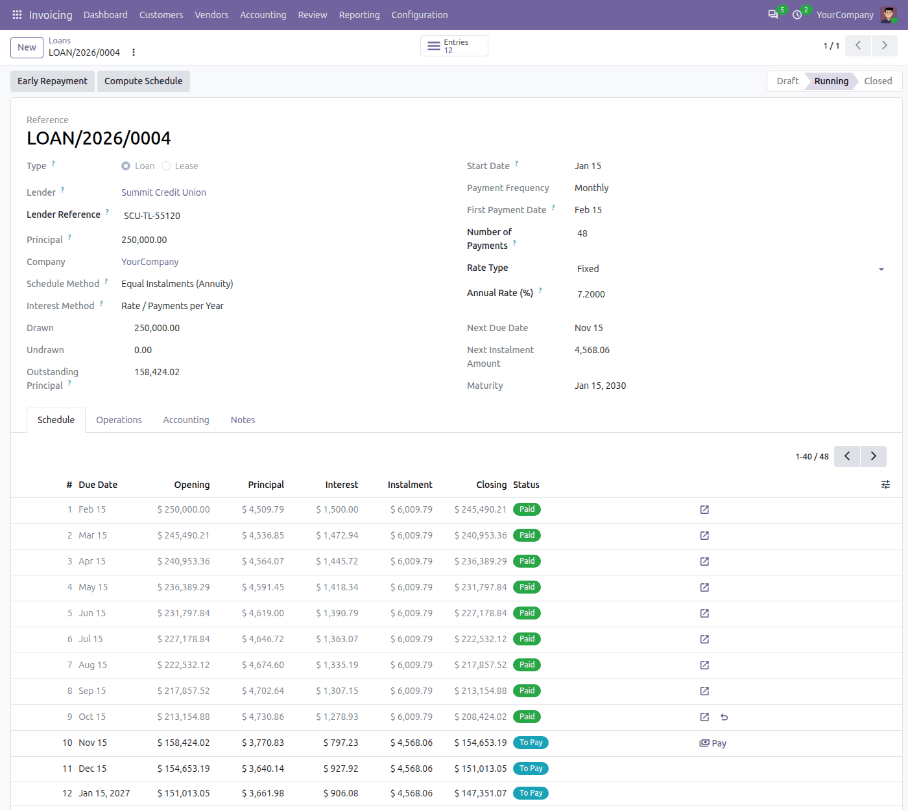
A 250,000.00 loan at 7.2% over 48 months: nine instalments paid, then lower instalments after an early repayment of 50,000.00.
Each event of the loan is one click, one entry, and the schedule follows: the Operations tab keeps the drawdowns and repayments with their journal entries.
| ✓ | Draw the loan down in one or more tranches; each drawdown posts its entry. |
| ✓ | Before the first drawdown the schedule is a projection; after each one, the unpaid lines repay the principal actually drawn. |
| ✓ | Pay from the next line of the schedule: the principal, the interest and the date can be adjusted to what the bank charged. |
| ✓ | Accounting › Loans › Instalments lists what is due within 30 days, for every loan and lease. |
| ✓ | The last paid instalment, a drawdown or a repayment can be cancelled from the loan: its entry is reversed on its date and the schedule computed again. |
| ✓ | In part or in full, with the interest due up to the repayment date. |
| ✓ | Then choose a Shorter Term (about the same instalments, fewer of them) or a Lower Instalment (same end date). |
| ✓ | A full repayment closes the loan. |
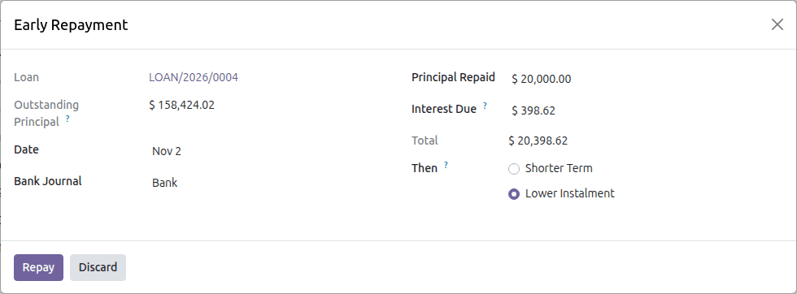
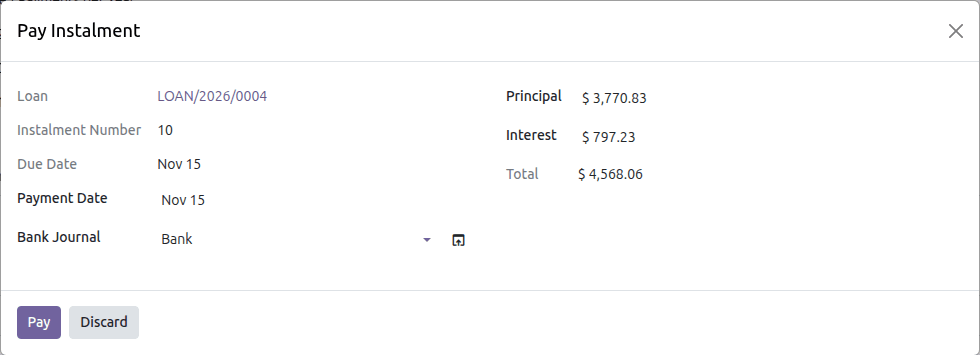
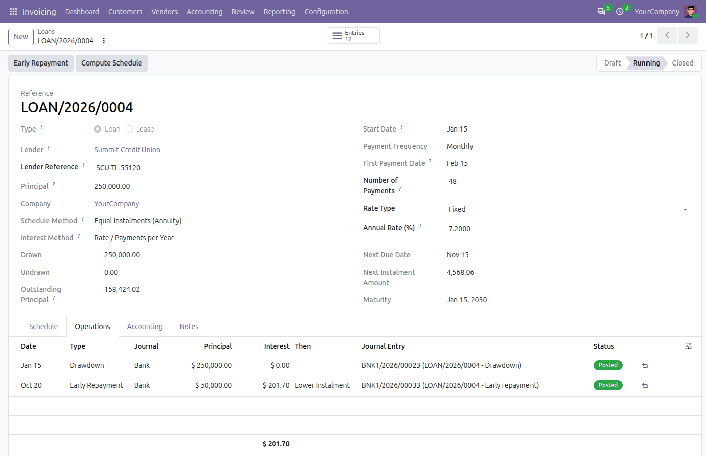
The Operations tab: the drawdown and the early repayment, with their entries.
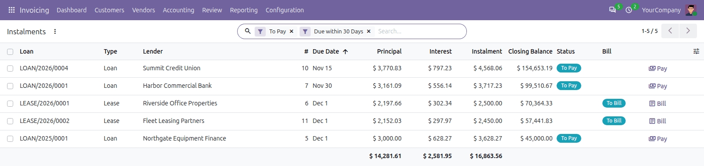
Accounting › Loans › Instalments: Pay the loan instalments, Bill the lease payments.
Most bank loans follow a reference rate. Record each new rate when the bank announces it: the schedule takes it from its date.
| ✓ | A floating rate changes on its dated rate changes; the current rate shows on the loan. |
| ✓ | The unpaid lines due from the date of a change are computed again; a period takes the rate in force on its first day. |
| ✓ | With the actual-days method, a change in the middle of a period splits it at the change. |
| ✓ | Changing the rate or the number of payments of a running loan computes the unpaid lines again. |
| ✓ | A rate change is dated after the last paid instalment: the paid lines never move. |
| In the demo | |
| Initial rate | 6.00% from April 2026 |
| Rate change | 6.50% from August 1 |
| Rate change | 6.25% from December 1 |
| Effect | next instalment 3,717.23, then 3,705.98 |
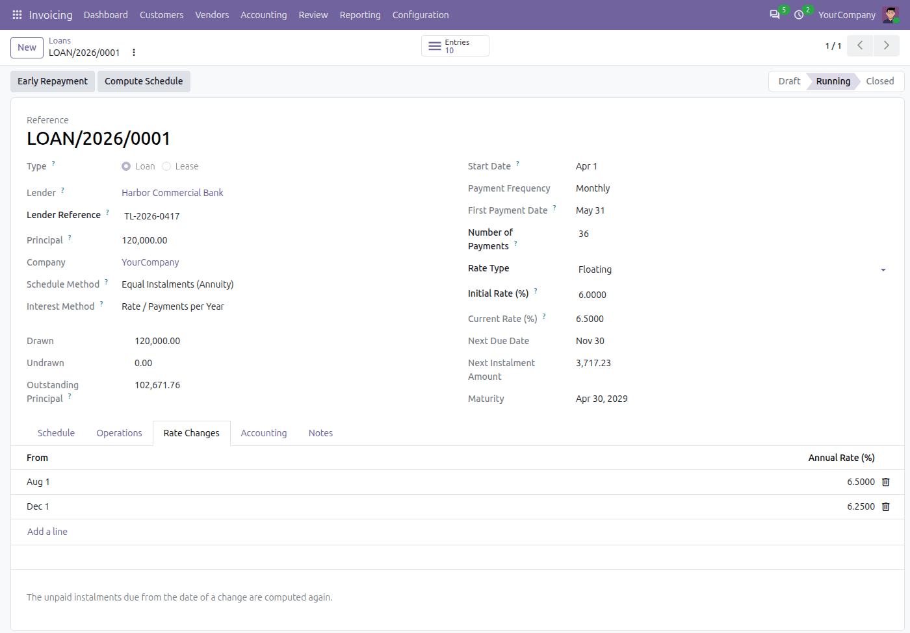
The lessee side of a lease, in the way of IFRS 16: a right-of-use asset against a lease liability at the present value of the payments, each payment split into the finance charge and the reduction of the liability.
| ✓ | Enter the lessor, the lease payment (taxes excluded), the number and frequency of the payments, the first payment date and the rate of the lease. |
| ✓ | The lease liability is computed: the present value of the payments at that rate, so that the payments repay it exactly. |
| ✓ | Paid in arrears, or in advance (the first payment on the start date). |
| ✓ | Confirming the lease recognizes it: Dr Right-of-use asset / Cr Long-term lease liability. |
| ✓ | Numbered LEASE/2026/0001, under Accounting › Loans › Leases. |
| ✓ | Each payment is a vendor bill of the lessor, dated on its due date, in the purchase journal: one line for the principal (the lease liability), one for the interest. |
| ✓ | The Bill button of a line, Create Bills on several, or a daily scheduled action on the due dates. |
| ✓ | The taxes of the bills (such as the VAT) on every line; the bills posted, or left in draft to check. |
| ✓ | The bill is paid like any vendor bill; its status shows on the schedule (To Bill, Billed, Paid). |
| Example | |
| Lease | 12 monthly payments of 1,000.00 at 6% |
| Lease liability | 11,618.93 (11,677.03 paid in advance) |
| First bill | 941.91 of liability + 58.09 of interest |
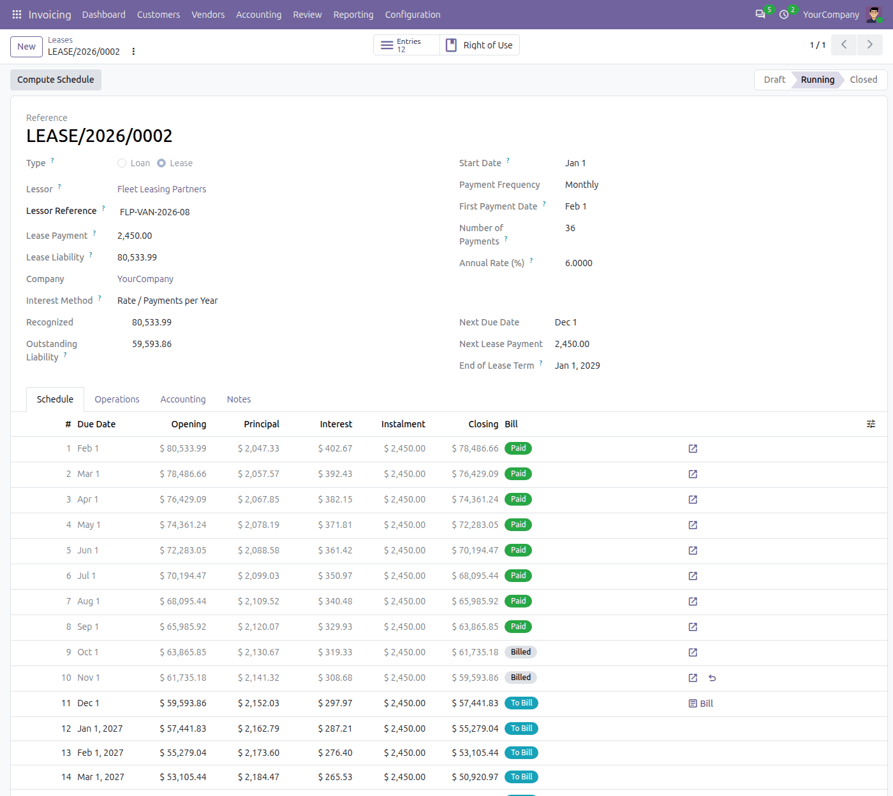
A lease of 36 monthly payments of 2,450.00 at 6%: eight bills paid, two billed, the next one to bill.
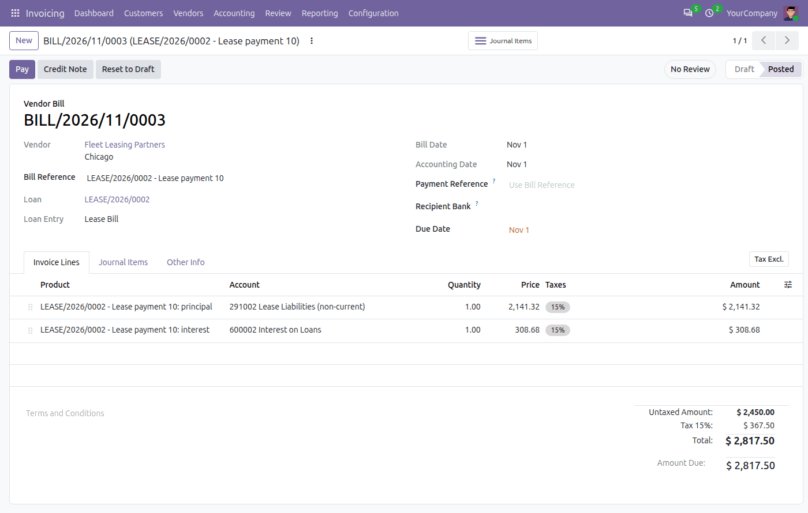
The bill of a lease payment: the principal on the lease liability, the interest on the interest expense, the VAT of the lease on both.
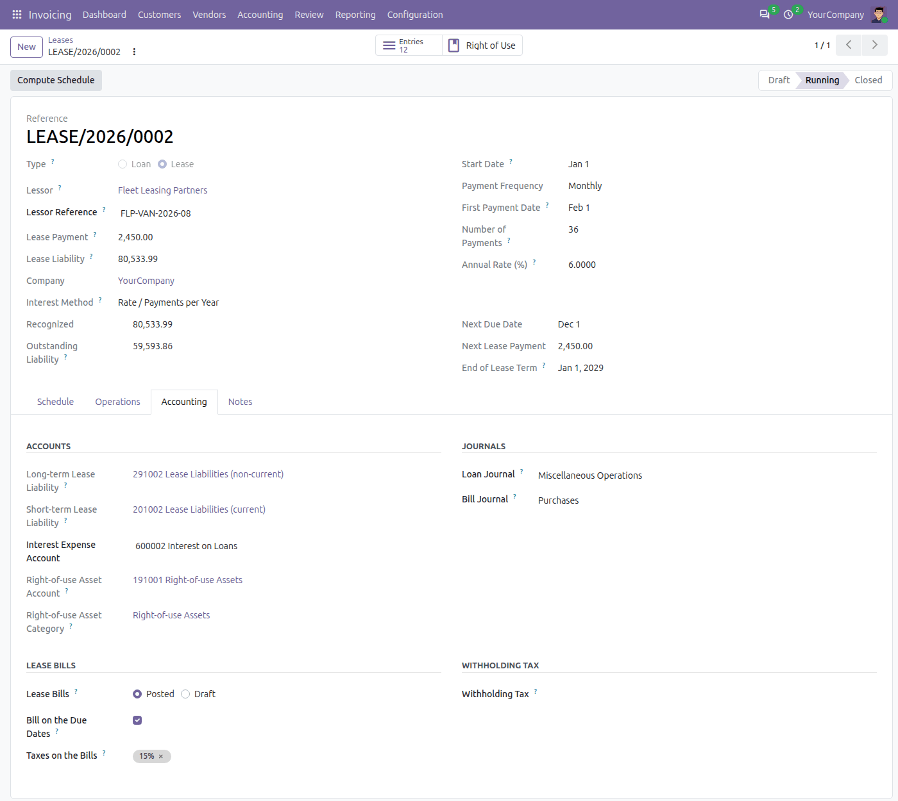
The Accounting tab of a lease: accounts, journals, how the bills are created and taxed.
| ✓ | Without Assets Management, the recognition debits the Right-of-use Asset Account of the lease (from the settings). |
| ✓ | With Odoo 20 Assets Management, the bridge Leases: Right-of-use Assets installs by itself: choose an asset category on the lease and the asset is created at the lease liability and depreciated over the lease term. |
| ✓ | The asset shows on the lease (Right of Use button); cancelling the recognition cancels it. |
The balance sheet splits a loan between the part due within a year and the rest. The reclassification keeps that split right at every period end.
| ✓ | At a period end, Accounting › Loans › Reclassification leaves on the short-term account the principal due within the next 12 months, for each loan and lease. |
| ✓ | It takes the earlier reclassifications and the instalments into account and posts only the difference, in either direction: run it every month or every year. |
| ✓ | Or tick Reclassify the Loans Monthly in the settings: at the beginning of each month a scheduled action reclassifies at the end of the month before. |
| ✓ | A loan that cannot be reclassified (a locked period, a lease bill left in draft) says why in its chatter. |
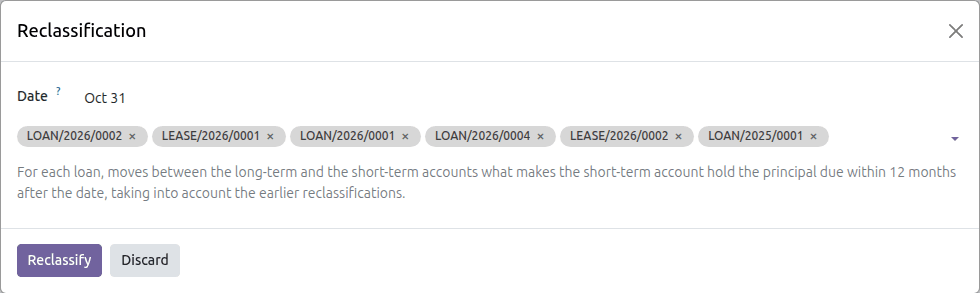
In Invoicing › Reporting › Management: Loans and Leases and Loans Analysis.
| ✓ | At any date, per loan or lease: the outstanding principal, the interest accrued since the last due date, the next due date and amount, the principal due within 12 months and after. |
| ✓ | All the loans and leases, one type, or the ones you pick; on screen as a list or a pivot, or as a PDF. |
| ✓ | Totals in the company currency, at the value in the books. |
| ✓ | Loans Analysis: the principal, the interest and the instalments of the running and closed loans and leases, year by year, as a pivot table or a graph. |
| ✓ | Each loan prints with its terms, its position and its whole schedule (Print › Loan and Schedule). |
| ✓ | Every change of the terms is tracked in the chatter of the loan. |
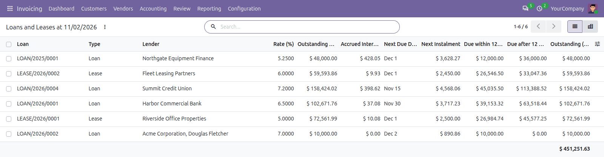
The Loans and Leases report at a date, on screen.
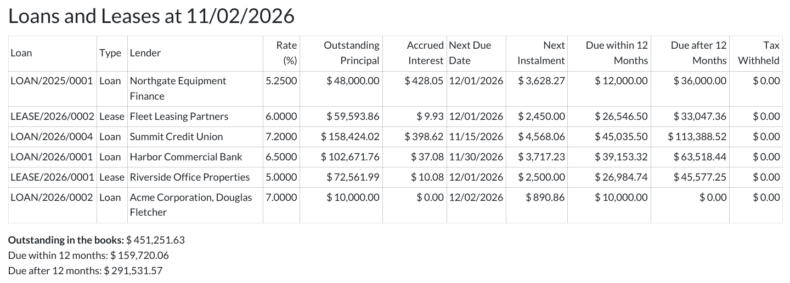
The same report in PDF (A4 landscape).
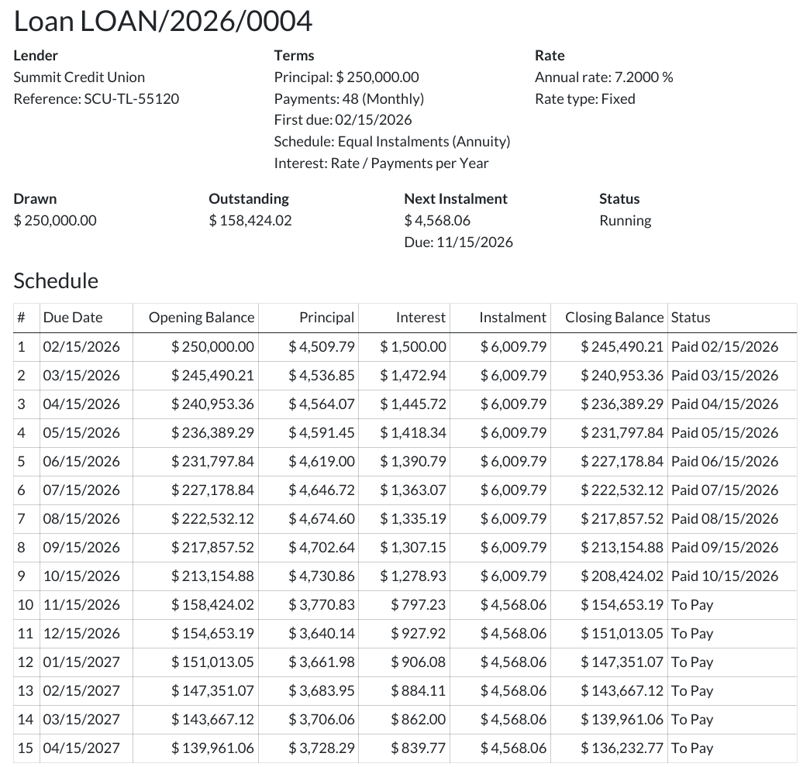
A loan printed with its schedule.
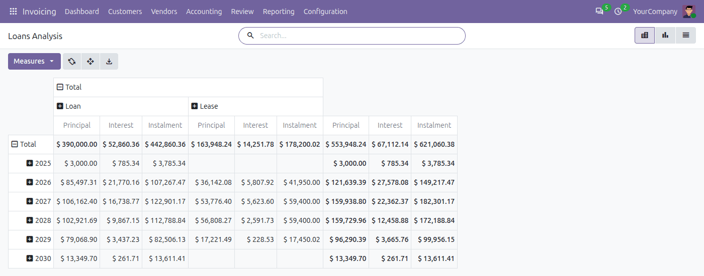
Loans Analysis: what is paid and what is still to pay, year by year, loans and leases side by side.
Where the law asks the borrower to withhold a tax on the interest: set a tax of -1% (for example) on the loan. The schedule shows the tax and the net payment, the payment posts it on the account of the tax with its tax grids, the lease bills carry it on the interest line.
The lender gives its own schedule? Import it from a CSV (comma, semicolon or tab) or an XLSX file: Date, Principal, Interest, or Date, Instalment, Interest. The file is checked (dates, amounts, total principal) and the unpaid lines replaced.
A loan or lease in another currency is posted in its currency with the value in the company currency. Each repayment of principal at another rate posts its exchange difference; a loan repaid in full is back to zero in both currencies.
Record rules per company; accountants run the loans, administrators delete them and set the defaults, auditors read them. Paid instalments and loan entries are changed only by cancelling them on the loan, and an entry in a locked period is refused.
Loans and leases share the schedule, the reports and the reclassification. What differs:
| LOANS | LEASES | |
| Menu and numbering | Accounting › Loans › Loans; LOAN/2026/0001 | Accounting › Loans › Leases; LEASE/2026/0001 |
| What you enter | The principal | The lease payment; the lease liability is computed |
| Schedule | Equal instalments, fixed principal or imported | Equal payments |
| Rate | Fixed or floating, with dated rate changes | Fixed (implicit rate or incremental borrowing rate) |
| Money in | Drawdowns, in one or more tranches | None: Dr Right-of-use asset / Cr Lease liability on confirmation |
| Each payment | Paid from the schedule: a bank entry | A vendor bill of the lessor, then paid as any bill |
| Early repayment | In part or in full | — |
| Right-of-use asset | — | On its account, or created and depreciated with Assets Management |
| Short / long term | Reclassification | Reclassification |
| Withholding tax | On the payment of the interest | On the interest line of the bill |
| Reports | Loans and Leases, Loans Analysis, PDF | Loans and Leases, Loans Analysis, PDF |
| Cash forecast | Unpaid instalments (with the bridge) | Payments not yet billed (with the bridge) |
| ✓ | In Invoicing › Configuration › Settings, section Loans: the long-term and short-term loan accounts, the interest expense account, the loan journal and the bank journal. |
| ✓ | For the leases: the long-term and short-term lease liability accounts (the loan accounts when empty), the right-of-use asset account and the purchase journal of the bills. |
| ✓ | Tick Reclassify the Loans Monthly for the automatic month-end reclassification. |
| ✓ | For a withholding tax, create a tax with a negative amount and the account of the tax withheld. |
| ✓ | Check that the payment methods of the bank journal have their outstanding receipts and payments accounts. |
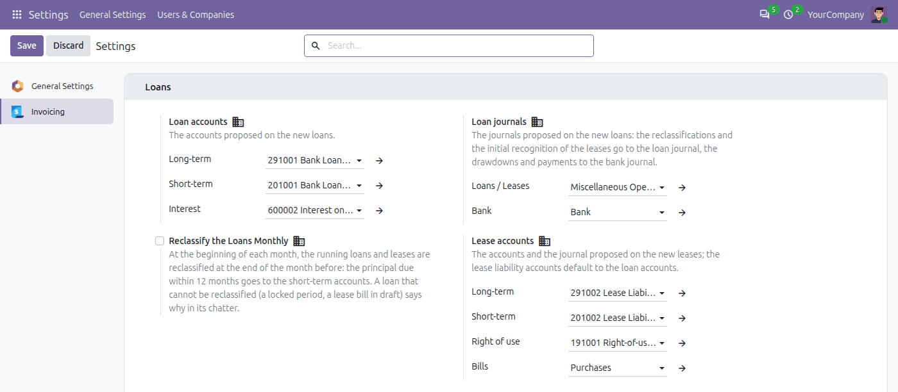
Loans and Leases comes with two bridge apps, released with it. A bridge links Loans and Leases with another Odoo Mates app: add the one for each app you already use. A bridge also installs by itself when both apps it links are installed.
om_account_loan_cash_forecast).| ✓ | The unpaid instalments of the loans and the lease payments not yet billed, in the forecast on their due dates. |
| ✓ | Take the latest Cash Forecast too: this release adds to it what the bridge needs (the rows of the forecast are extendable). Download it again, replace its folder and upgrade it, before installing the bridge. |
| ✓ | The right-of-use asset of each lease, created on its recognition and depreciated over the lease term. |
| ✓ | Works with the Assets Management you have: nothing to update there. |
Neither of them? Loans and Leases works on its own: it needs only Invoicing.
The app is free, for Odoo 20.0 Community. It needs only the Invoicing app (account) and no extra Python library (XLSX schedules are read with openpyxl, a requirement of Odoo itself).
om_account_loan and the modules it needs).The Loans menu is under Invoicing › Accounting, which shows to the users with Show Full Accounting Features: tick it on the user (Settings › Users, in developer mode), as for the other accounting apps. With Odoo 20 Accounting Community every accountant has it.
The bridges install by themselves: Leases: Right-of-use Assets when Assets Management is installed too, Loans and Leases in the Cash Forecast when Cash Forecast is. If those apps are already installed, install the bridge from the Apps menu. Upgrading? Replace the folder, restart the server, then click Upgrade on the app.
Questions, a bank that computes differently, a feature you need: write to odoomates@gmail.com or open an issue on GitHub.